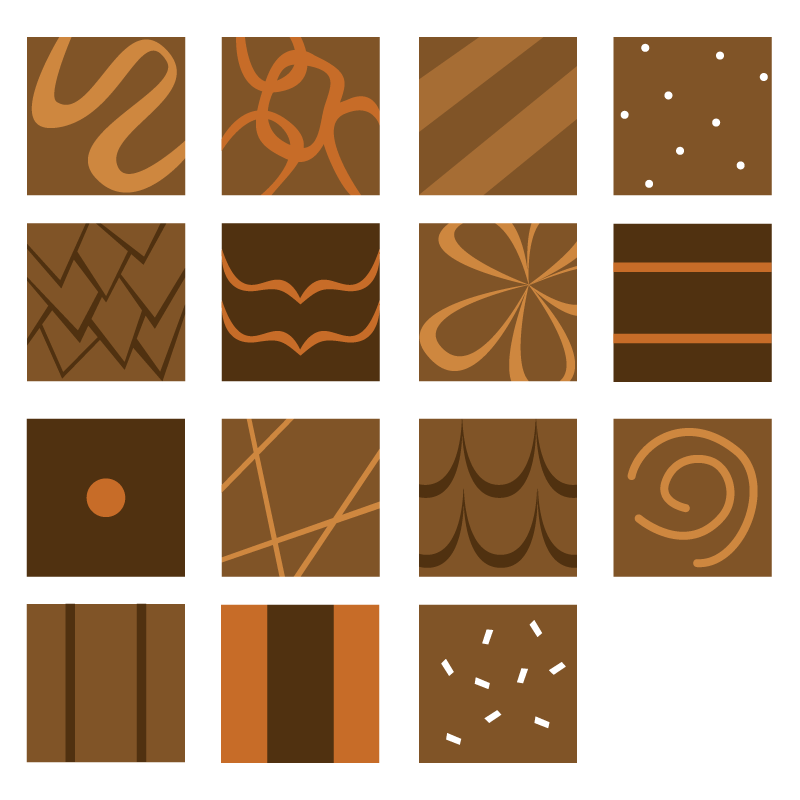
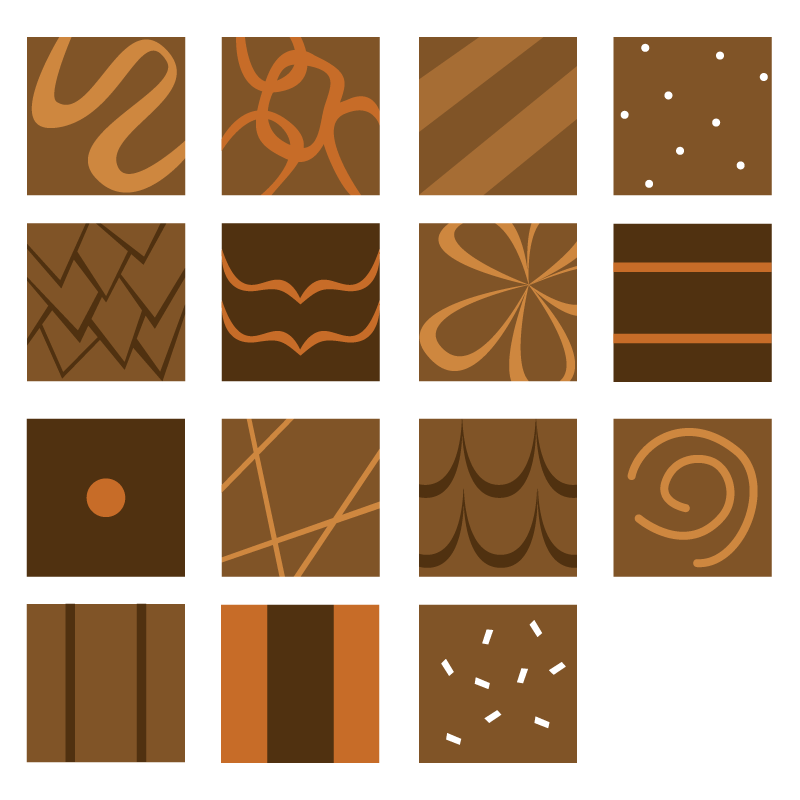

khanh nguyen
When I was a little kid, one of my dreams was to be able to walk into a room full of chocolate, the likes of Road Dahl's Charlie and the Chocolate Factory. I still haven't been able to bring that fantasy into reality, but I dreamed up an Escape Room idea that comes quite close.
Chocolate Piece by Piece is my idea for an escape room that consists of a giant sliding puzzle made of life-sized chocolates. The game is based off of the sliding puzzles in which players can only move things piece by piece in order to re-create a certain pattern. In this version, players enter a room decorated like what seems to be a life-sized box of chocolates, complete with nutrition facts and chocolate assortment cards lining the wall. In the center is a 4 x 4 grid of chocolates with a missing piece, and players realize they have to slide the chocolates one at a time to recreate a pattern of chocolates on the wall. To create a proof-of-concept, I made a 1:12 scale looks-like model of the sliding chocolates.
 
The idea evolved from my theme of "Sugarland," which my team from my advanced product design class had picked as our theme for our escape room ideation. Once we picked a theme, each team member branched off to further ideate on a specific sweet, and I picked a chocolate box as my idea. I'd always viewed problems as puzzles for me to solve, relishing in the challenge of trying to see a problem from different angles until I've uncovered a solution. I wanted my concepts to combine that thrill of solving a puzzle with the sweet novelty of being in the exterior of a giant chocolate box, and created three different concept sketches for the room.
This particular sketch model was a further evolution of previous concept sketches of the room. It combined the two concept sketches shown below, one of truffles which would have been rolled into their spots, and one of a harder version of the game called a pendant puzzle. (More information about the two concept sketches can be found on this page.) The model was chosen to achieve a happy medium of feasibility in terms of implementing the actual escape room and appropriate level of difficulty for players.
I wanted the looks-like model to emulate the look of a box of artisan chocolates. During the process of creating the foam chocolates, I imagined that I was crafting a gourmet piece of chocolate the same way that a chocolate connoisseur would: mine just happened to be a lot larger. I made the chocolates from chunks of blue foam, cut on a desktop wire cutter. I used a rough grit of sandpaper to start rounding off the edges, then covered the foam in spackle and continued sanding for a smoother finish. This was repeated a couple of times to get the chocolates to just the right curve and finish. Once I was satisfied with the texture of each piece, I hand-painted the piece to look like chocoalte. Each piece had a different design, both for aesthetics and for functionality: the designs had to be distinct enough so that image-recognition software could recognize each piece and know when the puzzle was complete. I used hot glue from a hot glue gun to create the drizzle on the chocolate pieces, and a combination of formed clay and various beads to create the toppings. A process picture of a piece of chocolate before adding each individualized topping is shown below.
The goal of the looks-like model was to explore the creation of realistic-looking chocolate pieces as well as detailing the overall look and feel of the chocolates in the room. More information about the concept can be found here.
{kind=link}
{kind=link}
{kind=link}